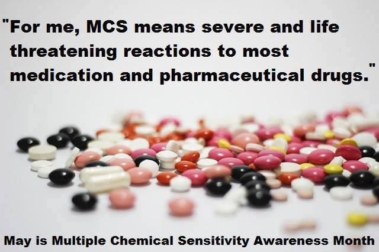

Please be aware that I am allergic to mold and have had adverse reactions to penicillin in the past. My vital signs are frequently impacted by reactions to the chemicals around me. You will get the most accurate reading in fresh, clean air 15-30 minutes after exposure.
I do not respond well to standard medications in standard doses. I am more likely to display side effects than any healing from taking them. Please watch carefully if administering anything to me.
Please read the following taken from http://www.ctaz.com/~bhima/hospital.htm if there is not a MCS/EI protocol in place already.
Hospitalization
- Hospitalization
for the Chemically Sensitive Patient
- Additional
Considerations from the Editor
- Hospital
Protocol Guidelines
- Hospitalization
for the Chemically Sensitive Patient*
- In Loving Memory of Selene Anema, RN
GENERAL CONSIDERATIONS
All members of the medical team should be fragrance-free,
especially in regard to perfumes and colognes.
Please use rooms without carpet whenever possible.
Keep the use of plastic to a minimum. Use paper tape instead
of plastic tape. Test Betadine, tape, and suture material 48
hours prior to surgery to observe any adverse reaction. Avoid
latex gloves.
Improve the air quality. Patient may request permission to
seal the air ducts. Open windows if possible. Utilize available
air filters. Do not allow open containers of chemicals to sit in
room. Wash down the operating room with a water and baking soda
solution to remove disinfectant and pesticide odors. This patient
is extremely pesticide sensitive.
Oxygen: ceramic mask is preferred over plastic.
The patient has prepared for surgery by lowering her total
load of chemical exposures and increasing her intake of
antioxidants, vitamins, and minerals. High levels of vitamin C
before and during surgery (1 to 4 grams every 4 hours) helps to
tolerate chemical overload.
Please use the bed linens brought by the patient.
Please allow the patient to use her own purified water for
drinking. Also, please inform the dietecian that the patient has
food sensitivities. Only pure food which does not contain
preservatives, dyes, colorings, MSG, aspartame or other chemicals
are allowed.
The following post-op complications may be due to unrecognized
sensitivities and/or inciting agents: phlebitis, pulmonary
embolism, edema, petechiae, increased drug reactivity, muscle
spasm, nervousness or depression, myalgia, arthralgia, headaches,
bloating.
DRUGS AND THE CHEMICALLY SENSITIVE
PATIENT
Keep medications as simple and minimal as possible. 1/4 to 1/2
the usual dosage of the drug may be adequate.
DRUG REACTIONS are very common in chemically sensitive
patients. Observe for symptoms such as spastic muscles, pulling
parathesias, hyperesthesia or hypoesthesia, and jitteriness.
Also, observe for local swelling, hives, syncope,
hyperventilation, seizures, asthma, severe anaphylaxis, site
inflammation, severe fatigue, increased sensitivities.
0.2 mEq/kg of magnesium over a 4 hour period daily may relieve
spasms.
PRE-OP MEDICATIONS
No oral medication if possible. Avoid antihistamines and
steroids if possible. Benadryl or an injection of 0.4 to 0.6 ml
of IM atropine may be used to prevent excess secretions. Also,
Atarax is usually safe. Usually, atropine or morphine-demerol
compounds are sufficient for pain control. To alkalinize stomach
contents to reduce problems with aspiration pneumonitis, use Alka
Seltzer in gold foil (without aspirin).For intravenous fluids,
use IV 0.45 normal saline in glass bottles, not plastic . Soft
plastics such as those used for IV drips and blood bags contain
phthalates, which include many toxic chemicals such as hormone
disrupters. These chemicals leach into the IV solution and can
cause reactions in the senstive person. Glass bottled 45 NS
available from Merit Pharmaceuticals, 800-696-3748. If dextrose
or Ringer's solution is used, please observe for a reaction due
to its corn content. For fructose and invert sugars, contact
company beforehand to check formulations and sources.
ANESTHESIA
Do not test anesthetic drugs before use. Use local
anesthetics, such as preservative-free and epinephrine-free
xylocaine or carbocaine whenever possible. No halogenated
hydrocarbons (Fluothane, Ethrane, Penthrane). The chemically
sensitive patient can get dramatically worse with gas
anesthetics. If recovery does occur, can take days to return to
normal state. Inhaled anesthetic is avoided if at all possible
since the fluorinated hydrocarbons and nitrous oxide are known to
be immunosuppressants. If required, nitrous oxide only in as
limited levels as possible.
Check all drugs for preservatives. The basis for anesthesia
that works well is: 1. The patient inhales 100% oxygen for 5
minutes
2. Bolus of sodium pentothal or other short-acting barbiturate
is used for induction.
3. Followed by curare (a long-acting morphine compound) and a
long-acting scopolamine compound. Succinyl choline chloride
(Anectine) may also be used to paralyze. Sublimaze and Innovar
can be used to obliterate memory. Sodium pentathol, Versed,
Phentanyl (long acting opiod) are recommended drugs for induction
and maintenance of anethsesia. For shorter procedures, the
patient may use the Brevitol drip. Diprovan is recommended for
induction and/or regional anesthesia.
SURGERY
Do not use any dyes, as discussed prior to surgery. Safe
sutures: Silk, Cotton, Gut-lamb. Avoid synthetics.
POST-SURGERY
Antibiotics given intravenously provoke fewer reactions than
when given orally. In-line intravenous filters should be used for
higher tolerances. Post-surgery, use TENS unit or acupuncture for
pain control. Vicodan may be OK for pain.
RECOMMENDED LABWORK FOR SURGERY
- CBC
- Urinalysis
- SMA 20
- Liver function
T and B Lymphocyte function (may include function of
cell-mediated immunity, blastogenesis, phagocytic index, and
migratory inhibitory factor). If on 2nd or 3rd day post-op,
patient has a sudden purulent drainage, check serum levels of
opsonins.
REFERENCES:
- Rea, William, MD, Chemical Sensitivity, Volume
IV.
- Recommendations also from Jeffry Anderson, MD.
- See Green Guide #42 on hormone disrupters (888-ECO-INFO).
* Note: Selene
Anema's article was written in 1997, so the specific anesthesias
have probably changed. Please use this for general
recommendations only.
Selene
Anema passed away in late 2008.
- *Caution: The information on
this page is not intended to be a substitute for a
physician's care or treatment. Please
consult with your
doctor before acting
on any of the recommendations.
- For example, a large
percentage of MCS/EIs have porphyria. It
is important to test or determine whether or not you have
acute or non-acute porphyria, and the safe and unsafe
drugs for this condition. Please discuss the risks with
your doctor and anesthesiologist before surgery.
Additional
Considerations from the Editor
MCS
Compliant Hospital. Windham Hospital. 112
Mansfield Ave.,Willimantic, Connecticut 06226. MCS person visited
her husband at this hospital for 2 days. From her experience
there, she has no fears of going there herself for knee
replacement surgery, primarily because of the responsiveness of
the staff for eliminating scents. The head nurse was allergic to
Clorox, so she used Quatinary Ammonium for disinfectant. She noticed no smell
from this product. In another instance, when she asked the woman
in charge of information about a troublesome scent, within 15
minutes she was visited by person in charge of environment, a
nurse, and maintenence staff. They discovered the problem and it
was taken care of. http://www.windhamhospital.org/index-flash.htm
Healthier Hospitals. by
Toni Temple. A 28 page booklet written by the combined efforts of
the author, an MCS victim, and two greater Cleveland, Ohio, area
hospitals. The book educates hospital administration, staff and
medical personal on proper care and consideration for the special
needs of MCS patients. It improves access for those hospital
patients who suffer from this disability. Order from NEEDS
1-800-634-1380, booklet not available on website.
Safer
Medical Tape and Bandages. Johnson & Johnson
paper tape has a well tolerated adhesive. Johnson and Johnson
"Steripads" are 100% cotton. Order in advance
through the hospital.
Surgical
Tape Safeguard. Submitted
by Anonymous MCS. A
safeguard for surgery is that MCS patients must convince the
hospital to take allergies to surgical tape seriously. They
didn't in my case, and I suffered the consequences. The last
thing I heard the nurse say was something about a tape allergy,
but it was ignored. The hospital needs one person who actually
reads the patients history taken down at registration...and who
sees to it that the staff takes it seriously. Editor's Note: It
may be beneficial for the doctor who treats your MCS, to write a
letter about chemicals and their serious impact on your health,
to be mailed in advance for the administration, and another copy
to have with you at the time of your stay.
Health
Care Without Harm. Educate your own doctors and nurses
and administrative staff, whether with an HMO or in private
practice. http://www.noharm.org The
page on pesticides and cleaning agents is http://www.noharm.org/pesticidesCleaners/issue
Healthy
Hospitals Report. Click on Issues- and Healthy
Hospitals. Download Healthy Hospitals report. www.beyondpesticides.org/main.html
Pest Management in New York State Hospitals: Risk Reduction and Health Promotion. Attorney General of
New York State, December 1995. http://www.oag.state.ny.us/environment/hospital95.html
NIEHS's
Common Air Pollutants (National Institute of
Environmental Health Sciences). Educate
your healthcare folks, educational facilitiy, or workplace. Print
out a copy of NIEHS's Common Air Pollutants: Pesticides &
Cleaners, Fragrances, and Cleaners & Disinfectants. NIEHS has
listed "formaldehyde, fragrance products, pesticides,
solvents, cleaning agents" under "volatile organic
compounds." http://www.niehs.nih.gov/external/faq/indoor.htm
MCS/EI
Hospitalization and Anesthesia - based on personal
experience. http://www.immuneweb.org/articles/anesthetics.html
- For more
information on safe anesthetics for porphyria,
- see http://members.tripod.com/~PorphBook/4.html Note especially, the information
listed at the bottom of this referenced page, concerning
the complexity of this situation.
-
- CIIN. Chemical
Injury Information Network. Hospitals
& Chemical Exposures. To obtain a complete
topic list of the studies and articles from Chemical
Injury Information Network’s in-house library,
specify the topic(s) and write to CIIN, P.O. Box 301,
White Sulphur Springs, MT 59645; call 406-547-2255;
or fax 406-547-2455.
- E-mail request (members
preferred, see instructions) http://www.ciin.org/email.htm
- Library page: http://www.ciin.org/library.htm#gen%20mcs%20anchor
Fragrance Control and
Health Care Facilities. HEAL. Human
Ecology Action League. The Human Ecologist.
"Fragrance control and health care facilities: An interview
with Marlene Freeley, R.N., M.S., Director, Occupational Health
Services, Brigham and Women's Hospital, Boston,
Massachusetts," by Louise Kosta. Issue Number 96,
Winter 2002. Order this issue or subscribe to quarterly
publication. Phone:
404-248-1898 http://members.aol.com/HEALNatnl
- For extended stays.
It would be helpful to "code" MCS or label
the patient's bed or room to alert all hospital
personnel. Submitted by an MCS/EI.
Detoxification from
anesthesia. Vitamin C IV, if tolerated. 25
grams in glass bottle. May administer before and after surgery.
Repeat if necesary. This is most effective. Needs prescription,
of course.
- MCS/EI Hospital
Experiences
- Unfortunately, the experience I've
had lately with anesthesiologists, is that my MCS issues
were easily dismissed. The lack of research and education
about this illness, makes our journey steep and arduous.
But, we have a good chance when MCS/EIs, kindly and
consistently, do what thay can to bring about awareness.
- Post script:
One year later, I requested the records for my surgery.
The anesthesiologist reported the I had "multiple
allergies." In the"Other" box on the same
form, he added, "multiple phobias." He stated
on the form that he would comply with patient requests.
The fact is, that he did not comply with my request for
no gas. He advised against a spinal block, as he was
wheeling me into the operating room. I agreed to the gas.
I was tired and not prepared to stand my ground. Next
time, I will submit my doctor's request in writing for no
gas anesthesia along with my MCS diagnosis to discourage
the suggestion that I have "multiple phobias."
- Editor, Mary Kempf
-
- Wanted: Safe hospital
suggestions. Please submit to: bhima@citlink.net Please put red lake in subject line
- We all have
such different sensitivities . . .
- Please consult
with your doctor and choose what applies to you.
-
- Make your own:
-
- Hospital
Protocol Guidelines
- Permission was granted to share
this hospital protocol.
-
- MERCY MEDICAL
CENTER
- PROCESS
STANDARD
-
- MULTIPLE CHEMICAL
SENSITIVITY PROTOCOL
- APPROVED FOR All
Patients with Multiple Chemical Sensitivities
- DISTRIBUTED TO All
Patient Care Areas, Admitting, Environmental Services,
Nutritional Services
- and Governance/Administrative
Policy/Procedure Manual
-
- PURPOSE To outline
the management of patients with multiple chemical
sensitivities.
- LEVEL Independent
(requires nursing order only)
- SUPPORTIVE DATA
Patients with a history of allergy to chemicals found in
perfume, pesticides, detergents, household cleaners, etc.
may have multiple chemical sensitivities.
- - All supplies used to clean
patient room (where the patient is to be housed) and in
the care of the patient should be chemical free.
- - Staff caring for the patient
should not wear scented products.
- - Do not use air fresheners or
furniture polish in patient room.
- - Use only non-toxic cleaning
products: Vinegar, Bon AMI, Borax, baking soda, Planet
Solutions cleaning solution.
- - Use only I 00% cotton blankets,
towels, sheets.
- - Patient allergy is marked in
demographics on patient's permanent record; this comes up
on re-admission.
- - Patient may have multiple food
allergies.
- - Rinse all equipment before taking
into patient room.
-
- KIT CONTENTS - FOR PATIENT
CARE AREA'S USE AND EMERGENCY ROOM
- • Yellow arm band . Butterfly
cotton batting
- • Suction kit (without gloves)
. Stopcock
- • Non-latex surgical gloves .
Paper Tape
- • Non-latex powder-free exam
gloves . Butterfly for IV access
- • Planet Solution cleaning
solution . Velcro Tourniquet/ BP cuff
- (Planet Solution catalogue included
in kit) . Ivory liquid soap for staff
- • IV solution 5% Dextrose in
water 1000 cc . 3M Mask R-95 Dust Mist mask
- • Porcelain oxygen mask, tygon
tubing . Normal Saline 0.9% 1000 (glass
- • 5% Electrolyte Travert
Solution 1000 cc (glass bottle)
- • 2 Yellow Multiple Chemical
Sensitivity allergy signs
- • Soda Bicarbonate solution
500 cc (IV solutions are order from Baxter)
- • Codan IV administration kit
(ordered from Codan Pharmaceuticals 1-800-332-6326)
- • Sterile cotton sheets,
towels, blankets, wash cloths, cotton pillows, gowns
washed with non-perfumed detergent and no fabric
softener.
-
- Supplies for MCS
patients may be ordered from this foundation: (catalog
included in MCS kit.)
- American Environmental
Health Foundation 1-800-428-2343
-
- KIT CONTENTS - FOR OBOR,
OR, OPSC, NICU
- Each unit has a latex-free cart
specific to their area to which this protocol is added
(refer to Unit Specific ManuaL).
-
- SPECIAL PROCEDURES.
- 30 MIN TO 1 HR/DAY
- LSU:
- - Listen to the patient. Reassure
the patient that you understand they are chemically
sensitive and that you will work with them in providing
care.
- - Use all methods to minimize
exposure of the patient to exhaust fumes. Avoid idling
the ambulance. Turn off the motor when loading and
unloading the patient.
- - Refrain from wearing perfumes,
cologne, or smoking while on duty.
- - Remove the patient from hostile
environment. If they are having a reaction, move them out
into fresh air.
- - Use the patient's own medical
equipment whenever possible.
- - Wear non-latex gloves.
- - Avoid the use of IV and
medications, if at all possible, until patient is
transported to their destination, unless in a
life-threatening situation.
-
- EMERGENCY ROOM:
- - Immediately contact MCS patient's
physician for special instructions and review any medical
alert identification the patient may be wearing or
carrying, as well as any existing hospital computer
records on the patient. No treatments, IVs, tests, or
medications should be administered to a MCS patient
without prior approval of patient's private physician,
unless a life-threatening emergency exists.
- - Immediately isolate MCS patient
from all other patients and visitors.
- - Patient should not be wait in the
waiting room.
- - Patient should be placed in
Prompt Care Room One ASAP (remove latex products from the
room and request Environmental Services to clean with
approved cleaner for that purpose prior to placing
patient in the room, if at all possible).
- - Obtain MCS kit from Central
Supply for caring for this patient.
-
- PRIOR TO ADMISSION OF
PATIENT TO ROOM
- PATIENT SERVICES
SUPERVISOR:
- - Notify Environmental Services and
Pharmacy of MCS and place the patient in private room.
-
- ENVIRONMENTAL SERVICES:
- - Remove all latex products and
cubicle and window curtains from the patient room.
- - Clean the patient room with
Planet Solutions cleaning solution. Another recommended
product is Solutions-4-You. http://www.solutions-4-you.com Do not use products with chemicals or
wear latex gloves to clean the room. Hang cotton cubicle
curtains. Make bed with cotton bed linen that is washed
in non-perfumed detergent and no fabric softener.
- - Install new sharps container in
room.
- - Place air filter (HEPA Plus
activated carbon liner) in patient room and turn on.
(Obtain filter from Central Supply with the MCS kit).
-
- PHARMACY:
- - Use glass bottles for IV
solutions.
- - Do not use any substitutions or
generic drugs for the MCS patient without checking with
the physician.
- - Patients with MCS may react to
dyes, preservatives, and artificial sweeteners and
flavorings, cornstarch, or any other excipient.
- - Capsules may be safer than tablet
form.
- - Monitor MCS patient medications
by listing MCS patient under heading "Highly
Allergic Code"
-
- ADMISSION ASSESSMENT
- - Assess all patients on admission
to the hospital for allergies, and have Epinephrine
available.
- - Patient who has MCS should be in
a private room; follow procedure for preparing room
- - Obtain MCS kit from Central
Supply.
- - Place yellow arm band on patient;
mark with Multiple Chemical Sensitivity
- - Place Multiple Chemical
Sensitivity sign on patient's bed and outside door.
- - Place Multiple Chemical
Sensitivity under "isolation" on the Patient
Profile OC (prompt F4); this will print on the order
sheet on receiving department.
- - Patient should be provided
distilled drinking water in a glass container.
- - Notify Nutritional Services of
the patient's special needs. Patient needs to be
interviewed by Nutritional Services as soon as possible.
- - Ask the patient to describe all
beneficial procedures that have helped reduce the
severity of reactions in the past. List this information
in the medical record. Patient suggestions may include
items such as administering oxygen, drinking water,
eating fresh fruit, and other tolerated foods. Drinking a
solution of baking soda and water (one teaspoon to 1/2
cup water). Showering or shampooing.
-
- RD: DIET MODIFICATION
- NUTRITIONAL SERVICES:
- - Patient with MCS will require a
special diet. The diet should include no processed foods
of any kind, including instant oatmeal, instant mashed
potatoes, and other prepackaged mixes (such as gravies,
sauces and flavor packets). Use no dyes, preservatives,
artificial flavorings, artificial sweeteners, or MSG.
Provide patient with chlorine-free distilled water,
decaffeinated coffees (which have not been processed with
chemicals), and lactose-free milk. Food and drink should
be provided in glass containers. Allow patient to select
plain, non-processed foods from meats, vegetables, fruit,
and grain list.
- - On physician orders, permit
patient to supply his/her own tolerated food products and
dietary supplements.
- - Retain patient's dietary
requirements in the patient's medical record for future
reference.
-
- ROUTINE SAFETY
- - All hospital employees and
visitors are to check with the patient's nurse prior to
entering patient's room.
- - Patient should be isolated from
other patients and their visitors at all times. In the
event that the
- patient must be transported
elsewhere in the hospital, the patient should wear a R-95
mask.
- - Staff caring for the patient
should not wear perfumed products, hair spray, or
perfume.
- - Hospital personnel are to wash
their hands with unscented or ivory soap and apply
non-latex
- gloves prior to touching the
patient.
- - No live plants and flowers are
permitted in the patient's room.
- - No latex balloons
- - Alcohol swabs should not be used
on the patient. Food grade alcohol is OK.
- - Remove tops of vials before
drawing up medications.
- - Do not inject through any latex
ports.
- - Patient should bathe using
products they are familiar with that do not cause a
reaction.
- - Petroleum products, i.e. K-Y
jelly should not be used.
- - Patients with MCS going to
surgery alert Anesthesia well ahead of time in order for
the physician to discuss what anesthesia and pain control
will be used.
-
- TEACHING: DISEASE PROCESS
- - If patient has not been aware of
Multiple Chemical Sensitivities prior to admit, alert
them to the fact that they may be allergic to many
things.
- - If patient would like more
information about Multiple Chemical Sensitivities, they
may contact the following:
-
- Environmental Health
Network of California
- P.O. Box 1155
- Larkspur, California 94977-1155
- Support and information
line (SAIL) 415-541-5075
- http://www.ehnca.org
or http://users.lmi.net/wilworks
- See Toxic
Chemicals to
submit info if you have experienced harmful effects from
perfume.
-
- Chemical Injury Information
Network
- P.O. Box 301
- White Sulphur Springs, MT 59645
- (406) 547-2255
- (406) 547-2455 Fax
- http://www.ciin.org/
-
- American Environmental
Health Foundation
- 1-800-428-2343
- (Supplies for MCS patients may be
ordered from this foundation). Catalog included in MCS
kit.
-
- DOCUMENTATION
- - Document Multiple Chemical
Sensitivity in the patient's medical record, in the front
of the chart, PCP, PCS, MAR, and computer profile.
- - Record
implementation/modification/discontinuation of protocol
in PCP/PFS.
- - Record evaluation of
effectiveness of care in the EOSS on the NPR as related
to the nursing diagnosis/patient outcome.
-
- REFERENCES
- * Healthier Hospitals, Toni Temple,
Ohio Network for the Chemically Injured, 1996.
- * The Environmental Illness
Syndrome, Sherry A. Rogers, M.D., Syracuse, N.Y. 1997.
- * Human Ecology Research
Foundation, 8345 Walnut Hill Lane, Dallas, TX 7523 1.
-
- APPROVAL Clinical
Standards Development Committee .....................
10/99
- Hospital Standards of Clinical
Practice Committee ...........
-
- AUTHOR Cathy Carl,
RN, BS, CIC
-
- REVIEWED
- REVISED
- CONSULTING PHYSICIAN:.
Jo Tillman.M.D. DATE: 9/99
- 11/5/99 3:25 PM
-
- Thank you to all those who submited to this site.
Home